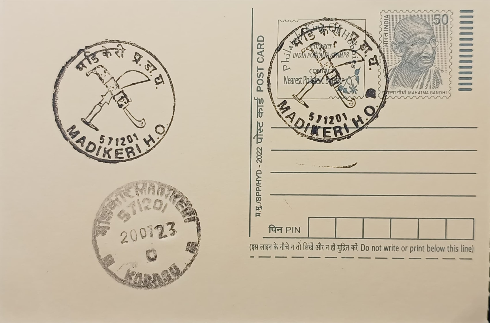

Odi Kathi & Peechi Kathi
ಒಡಿ ಕತ್ತಿ ಮತ್ತು ಪೀಚಿ ಕತ್ತಿ


The Odi Kathi and Peechi Kathi take their names from the Kodava Thakk (Kodava language) terms for their distinct forms: "odi" referring to the knife's broad, curving blade and "peechi" to the smaller decorative dagger traditionally paired with it. Together they form the customary weapon-set of the Kodava community of Kodagu (Coorg) district in Karnataka, worn tucked into the chale, the maroon-and-gold sash fastened over the black kupya coat that constitutes traditional Kodava ceremonial dress. The odi kathi is positioned at the back of the waist while the peechi kathi is worn in front, a pairing recorded in Kodava custom for generations and considered inseparable from any formally dressed Kodava man on ritual or festive occasions.
As a category, the two knives belong to the broader class of Kodava ceremonial arms, which also includes swords and firearms, and their significance is inseparable from the community's self-identity as a martial people with a long history of military service in the British Indian Army and later the Indian Armed Forces, including several officers who rose to the highest ranks. The knives are not merely decorative; they are treated as markers of adulthood, honour and masculine identity, handed down within families and displayed prominently during weddings, temple festivals, and the harvest festival of Puthari. Their ceremonial role places them alongside the gun as one of the recognised symbols of Kodava custom, comparable in cultural function to the kirpan carried by Sikhs.
The Odi Kathi is a substantial war knife with a broad, strongly forged blade sharpened along its concave edge and thickened at the base for added weight and strength, traditionally fitted with a handle carved from two pieces of buffalo or deer horn. The Peechi Kathi is considerably smaller and more ornamental, its hilt often worked into the shape of a parrot or peacock head, and its sheath frequently decorated with silver or gold work, sometimes set with stones and fitted with a fine silver chain ending in miniature replica weapons and tassels. During Kodava weddings the groom wears the Odi Kathi secured in a cloth belt called a thodang and, in a rite considered central to the ceremony, uses the blade to cut down a banana stem, an act read as a symbolic display of strength and resolve.
A distinguishing feature of Kodava material culture connected to these knives is the community's unusual legal standing with respect to weapons: in 1861, Mark Cubbon, then Commissioner of Mysore, exempted Kodavas and Jamma land-tenure holders in Coorg from the Disarming Act that followed the 1857 uprising, citing their demonstrated loyalty and martial tradition. This exemption was carried forward after Independence and reaffirmed by a 1963 Union Home Ministry notification under the Indian Arms Act, 1959, permitting persons of Coorg race and Jamma tenure holders to possess firearms without a licence, a status the Karnataka High Court upheld as constitutionally valid in 2019 after it was challenged in a public interest litigation.
The exemption, periodically renewed by the central government (most recently extended through 2029), continues to be invoked by Kodava cultural organisations such as the Codava National Council as evidence of the community's distinct ethnic and customary status within Karnataka, separate from caste-based classification. The Odi Kathi and Peechi Kathi remain in everyday ceremonial use rather than museum display, produced by traditional smiths in towns such as Madikeri and worn without legal restriction at weddings, funerals and festivals across Kodagu, making them a continuing marker of identity rather than a relic confined to historical record.
| Date of Introduction | September 7, 1989 |
|---|---|
| Address | Senior Postmaster, |
| Madikeri HO, | |
| Kodagu (dt.), Karnataka - 571201. |